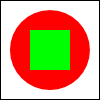
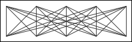

Answers for Quiz on Chapter 6
This page contains sample answers to the quiz on Chapter 6 of Introduction to Programming Using Java. Note that generally, there are lots of correct answers to a given question.
Question 1:
Programs written for a graphical user interface have to deal with "events." Explain what is meant by the term event. Give at least two different examples of events, and discuss how a program might respond to those events.
Answer:
An event is anything that can occur asynchronously, not under the control of the program, to which the program might want to respond. GUI programs are said to be "event-driven" because for the most part, such programs simply wait for events and respond to them when they occur. In many (but not all) cases, an event is the result of a user action, such as when the user clicks the mouse button, types a character, or clicks a button. The program might respond to a mouse-click on a canvas by drawing a shape, to a typed character by adding the character to an input box, or to a click on a button by clearing a drawing. More generally, a programmer can set up any desired response to an event by writing an event-handling routine for that event.
Question 2:
A central concept in JavaFX is the scene graph? What is a scene graph?
Answer:
A scene graph is a hierarchical data structure that represents the contents of a window. The scene graph is made up of "nodes" that represent visible components in the window, such as buttons and text-input boxes. Some of the nodes are "containers," which can contain other nodes. The GUI in a window is created by building a scene graph for window and setting the "root," or top, node of the scene graph to be the root of the window's scene.
Question 3:
JavaFX has standard classes called Canvas and GraphicsContext. Explain the purposed of these classes.
Answer:
A Canvas is a scene graph node that represents a drawing surface where a program can draw pictures. A canvas has an associated GraphicsContext that is used to do the drawing. The graphics context has instance methods for drawing shapes, such as lines and rectangles, on the associated canvas. It can also draw text and images. The graphics context also has properties that affect the appearance of the things it draws, such as the font that is used for text and the colors that are used for stroking and filling shapes.
Question 4:
Suppose that canvas is a variable of type Canvas. Write a code segment that will draw a green square centered inside a red circle on the canvas, as illustrated.

Answer:
Note: The size of the square and circle are not specified in the problem, so any size would be acceptable, as long as the square is in the exact middle of the circle. My solution draws the shapes in a 100-by-100 pixel canvas, leaving a 10-pixel space around the edges. It does not draw the white background, only the shapes.
To draw on the canvas, you need to use the canvas's GraphicsContext. Since it's not given in the problem, you have to get the graphics context by calling canvas.getGraphicsContext2D(). If g is the graphics context, then the methods for drawing the interior of circle and square are g.fillOval(x,y,w,h) and g.fillRect(x,y,w,h). (There are no special methods for drawing circles and squares; you have to draw ovals and rectangles, using the same value for the width and for the height.) The graphics context's setPaint() has to be called before filling each shape, to set the color for the shape.
GraphicsContext g = canvas.getGraphicsContext2D(); g.setPaint(Color.RED); // draw the shapes g.fillOval(10,10,80,80); g.setPaint()Color.GREEN); g.fillRect(30,30,40,40);
Question 5:
Draw the picture that will be produced by the following for loop, where g is a variable of type GraphicsContext:
for (int i=10; i <= 210; i = i + 50) {
for (int j = 10; j <= 210; j = j + 50) {
g.strokeLine(i,10,j,60);
}
}
Answer:
The outer loop is executed for values of i equal to 10, 60, 110, 160, and 210. For each of these values, the inner loop is executed for j equal to 10, 60, 110, 160, and 210. The drawLine command is therefore executed 25 times—and so, 25 different lines are drawn. These lines connect the five points (10,10), (60,10), (110,10), (160,10), and (210,10) to the five points (10,60), (60,60), (110,60), (160,60), and (210,60) in all possible pairings. Here is the picture:

Question 6:
Java has a standard class called MouseEvent. What is the purpose of this class? What does an object of type MouseEvent do?
Answer:
When an event occurs, the system packages information about the event into an object. That object is passed as a parameter to the event-handling routine. Different types of events are represented by different classes of objects. An object of type MouseEvent represents an event that was generated because the user moved the mouse or manipulated its buttons. It contains information about the location of the mouse cursor and any modifier keys that the user is holding down. This information can be obtained by calling the instance methods of the object. For example, if evt is a MouseEvent object, then evt.getX() is the x-coordinate of the mouse cursor, and evt.isShiftDown() is a boolean value that tells you whether the user was holding down the Shift key.
Question 7:
Explain the difference between a KeyPressed event and a KeyTyped event.
Answer:
KeyPressed and KeyTyped events are generated when the user uses the keyboard, and both kinds of event are represented by event objects of type KeyEvent. But a KeyPressed event occurs each time the user presses a key, and a KeyTyped event occurs each time the user's typing generates a character. It might take several key presses (and maybe key releases) to type a single character.
In more detail: A KeyPressed event is generated every time the user depresses one of the keys on a keyboard, even if doing so does not type a character. For example, pressing the shift key generates a KeyPressed event, even though the shift key, by itself, does not type anything. The corresponding KeyEvent object contains a code (such as KeyCode.SHIFT for the shift key) that tells which key was pressed. As the user types, a KeyTyped event is generated each time the user's typing generates a character. The KeyTyped event is in addition to any KeyPressed and KeyReleased events that were generated. The KeyEvent object for a KeyTyped event has a property of type String that contains the character that was typed.
Question 8:
Explain how AnimationTimers are used to do animation.
Answer:
Displaying an animation requires showing a sequence of frames. The frames are shown one after the other, with a short delay between each frame and the next. An AnimationTimer has an instance method, handle(), that is called for each frame while the animation is running (which should be 60 times per second). That method can update any state variables that need to change between frames, and it can draw a picture for the current frame. To use an AnimationTimer you need to create a subclass of AnimationTimer and provide a definition for the handle() method. You need to create a variable, say timer, from that subclass, and call timer.start() to start the animation running. (You can call timer.stop() to stop the animation.)
Question 9:
What is a CheckBox and how is it used? How does it differ from a RadioButton?
Answer:
A CheckBox is a component that has two possible states, "selected" and "not selected". The user can change the state by clicking on the CheckBox. If box is a variable of type CheckBox, then a program can set the state of the box to "selected" by calling box.setSelected(true) and can deselect the box by calling box.setSelected(false). The current state can be determined by calling box.isSelected(), which is a boolean-valued function. A CheckBox generates an event of type ActionEvent when the user changes its state. A program can listen for these events if it wants to take some action at the time the state changes. Often, however, it's enough for a program simply to look at the state of the CheckBox when it needs it.
A RadioButton is very similar and can be used in the same way. The difference is that a RadioButton can be added to a ToggleGroup. The toggle group will ensure that only one radio button in the group can be selected at a given time. When the user selects a radio button in the group, the previously selected button is automatically deselected.
Question 10:
What is meant by layout of GUI components? Explain briefly how layout is done in JavaFX.
Answer:
Layout means setting the sizes and the locations of the visible components in a window. In JavaFX, most components are in "containers", such as VBox or BorderPane, and it is the responsibility of the container to lay out the components that it contains. The programmer simply adds the components to the container (when building the scene graph). Different types of container implement different policies for laying other their content. Some containers leave some or all of the layout decisions to the programmer, and it is also possible for the program to take over the layout of a component completely by making that component "unmanaged."
Question 11:
How does a BorderPane arrange the components that it contains?
Answer:
A BorderPane can contain up to five components. One component occupies the center of the pane while the other components, if present, are placed above, below, to the left and to the right of the center. (The position of a component, c, is specified when it is added to the pane, using one of the commands pane.setCenter(c), pane.setTop(c), pane.setBottopm(c), pane.setLeft(c), or pane.setRight(c).)
The top and bottom components will be given their preferred heights; their widths will be set to fill the entire width of the pane (if that width is not greater than the component's maximum width). The left and right components will be shown at their preferred widths, and their height will be set to fill the height of the pane, minus the space occupied by the top and bottom components. The remaining space in the pane is used for the center component.
Question 12:
How is the preferred size of a component set, and how is it used?
Answer:
Standard components such as Button and Label are responsible for computing their own preferred size. A label, for example, has a preferred size that is just large enough to show the text and/or graphic on the label. The preferred size of a container is also usually computed by the container, based on the preferred sizes of the components that it contains. But is also possible for a program to set the preferred sizes of most components by calling the methods comp.setPrefWidth(w) and comp.setPrefHeight(h), and those values will be used instead of a computed size. (There is also a method comp.setPrefSize(w,h).)
A container uses the preferred sizes of all the components in the container when it decides how to lay out those components. It also uses the components' preferred sizes if it needs to compute its own preferred size.
(Note that the preferred size is only preferred; it is not necessarily the size at which the component will appear on the screen. The actual size can depend on how container it is in does lay out, the position of the component in the layout, the size of the container, and the preferred sizes of other components in the container.)